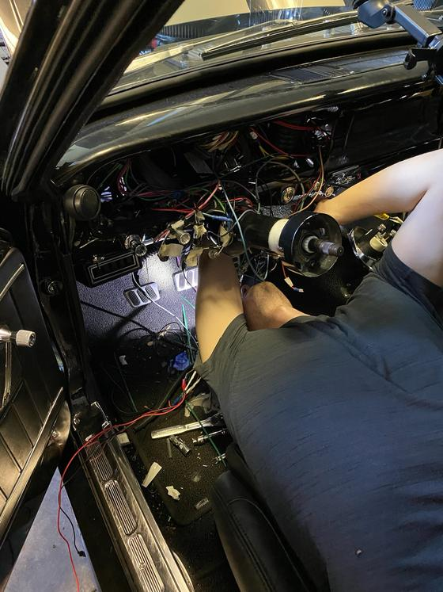
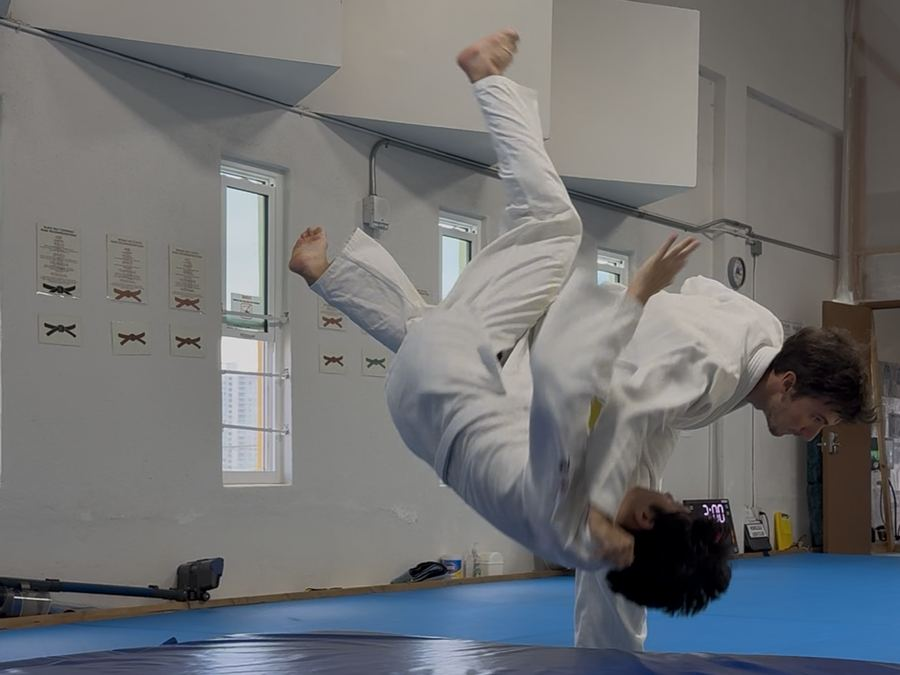
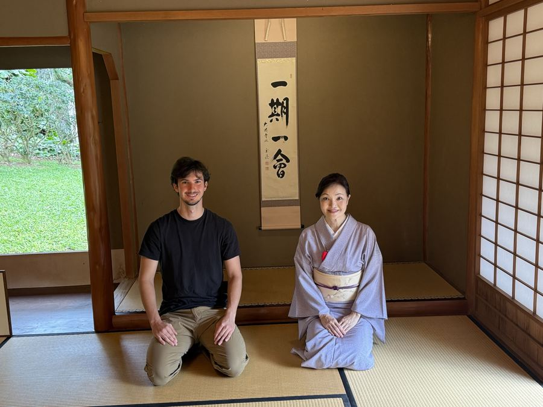
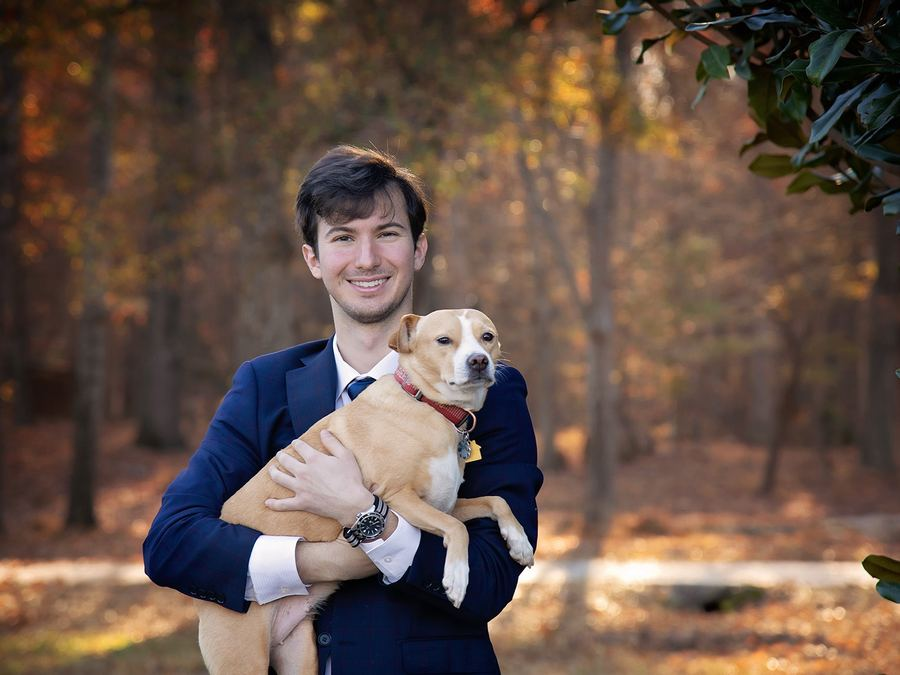

My creative intro
Watch on YouTubeAbout me
After graduating from Clemson in computer science during COVID, I built an AI scavenger hunt with my best friend that landed me a role at Wells Fargo. There, I developed a passion for bridging business and technical teams, balancing stakeholder priorities and deadlines with developers’ focus on scalability and reducing technical debt.
I have a passion for servant leadership and foreign cultures. During the 7 months gap before my MBA program started I took Japanese, green tea, classic Japanese Literature, and Judo courses at University of Hawaii. At my Hawaii Judo Dojo I used my Japanese skills to be the camp counselor for Japanese students during a Spring Judo camp. I also started Honolulu Language Exchange and was an assistant coach for kids special needs Judo classes.
As a project manager, I hope to bridge business and technology while collaborating with a team of diverse backgrounds and perspectives.

How I work
- Close to the user, close to the system
-
Our traders placed 50,000 to 100,000 trades a day. When something broke, I triaged it directly with the person it broke for, then worked with the engineering team on a fix that would hold. Doing both ends of that — hearing the problem firsthand and knowing what it costs to solve — is the habit I want to keep as a PM.
- Requirements are a decision, not a transcription
-
Our stakeholders had a long-term vision for the platform. Turning it into quarterly work meant scoping requests, testing whether they were feasible in the quarter, and being willing to say a request didn't fit the direction we'd committed to. I learned to treat prioritization as the job rather than the paperwork around it.
- Practical fluency with AI
-
In 2025 our team started using AI to generate test cases and cut down on long-standing technical debt, and I piloted GitHub Copilot across our development workflow. On my own I earned an Azure AI certification and built an AI scavenger hunt, which was the fastest way I found to understand what these systems are good at and where they fall over.
- Building across differences
-
Two and a half years of Japanese study, founding the Honolulu Japanese Language Exchange, and teaching judo to children with special needs have all trained the same muscle: getting a group of people who don't start from the same place to work toward something together.
Experience
Wells Fargo
Charlotte, North Carolina
Software Developer, Foreign Exchange Platform UI
2025 – 2026- Improved reliability of a global trading platform supporting 50,000 to 100,000 daily transactions by triaging application issues, prioritizing production fixes, and partnering with engineering teams on user-impacting problems.
- Translated business needs into scalable product solutions, working with stakeholders to define requirements, weigh implementation approaches, and ship enhancements across enterprise financial applications.
- Coordinated release schedules and development dependencies across cross-functional teams using Agile workflows, making delivery timelines more predictable.
- Piloted GitHub Copilot within development workflows and assessed adoption trade-offs between speed and code quality.
Associate Software Developer, FX Profile Management UI
2022 – 2025- Delivered a React-based platform for foreign exchange profile management, translating stakeholder needs into product specifications and improving workflow efficiency for internal users.
- Designed and launched a dashboard with cross-functional technology partners, giving the team faster access to operational insights.
- Implemented OAuth authentication across three applications with security stakeholders, standardizing how user access was managed.
- Built onboarding resources and led training for three new engineers, shortening ramp-up time and reducing repeat support questions.
Risk Mitigation Consulting
2021Albany, Georgia — contractor at Marine Corps Logistics Base Albany
Software Developer
- Modernized mission-critical government systems by improving smart-grid infrastructure and financial database functionality.
- Applied security best practices and maintained the technical certifications and clearance required for secure delivery.
Education
The University of Texas at Austin
Expected 2028McCombs School of Business — MBA, International Business
Forte Fellow
Clemson University
December 2020School of Computing — BA in Computer Science, minor in Economics
Certifications
Azure Fundamentals · Azure Administrator · Azure AI Fundamentals · Dale Carnegie Course
Outside work
I studied Japanese, judo, tea ceremony, and classical Japanese literature at the University of Hawai'i at Mānoa. I've coached judo for children with special needs, organized a spring judo camp, and founded the Honolulu Japanese Language Exchange — which meant doing the marketing myself until people started showing up.


